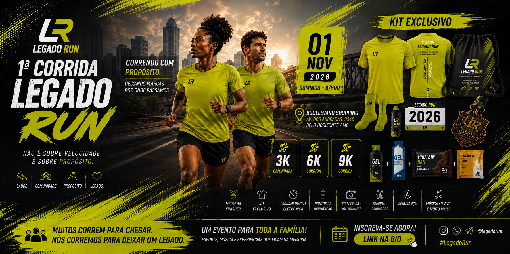

Meu primeiro passo.
Eventos
A comunidade tem um encontro marcado.
O calendário oficial reúne corrida, caminhada, treinos especiais e experiências do movimento LEGADO RUN.
01.11.2026
1ª Corrida LEGADO RUN
3K caminhada, 6K corrida e 9K corrida. Em frente ao Boullevard Shopping, Avenida dos Andradas, Belo Horizonte/MG.

Quero ir além.
Quero me superar.
Local
Em frente ao Boullevard Shopping.
A arena e a largada serão realizadas na Avenida dos Andradas, em Belo Horizonte/MG.
Kit
Você vai levar essa história com você.
Escolha entre kit simples ou kit completo com camisa oficial.
Experiência do evento
Programação do evento
- Início do evento
- Abertura do evento
- Aquecimento
- Largada 6 km e 9 km
- Largada 3 km
- Show Gospel
- Premiação e comunicados
- Encerramento